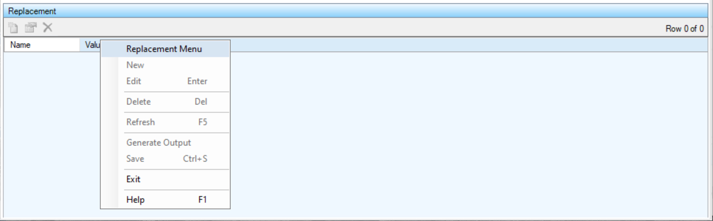

The GenText Editor contains the Data Tab with the contained Replacement List in the bottom panel of the tab.
The Replacement List contains the Replacements for the selected Item. Replacements can be added, edited and deleted from this list.
The Context Menu can be displayed by clicking the right mouse button on the desired list item. The list item is selected and the menu items apply to the selected item or list.
If you are using a Tablet or a laptop in Tablet Mode, touch the desired list item and leave your finger on the item for a short while until a box is displayed. This shows that the touch is considered a right mouse click. Remove your finger and the context menu will be displayed.
The 'New' menu item displays the Replacement Detail dialog to allow for the creation of a new Replacement entry.
The 'Edit' menu item displays the Replacement Detail dialog to allow for editing the selected list item.
The 'Delete' menu item deletes the selected list item.
The 'Refresh' menu item reloads the list items from the database.
The 'Generate Output' menu item generates the Output Text based on the selected Template and Data. It performs the same function as the 'Generate Output' menu items on the Template Text, Section List, Item List and Output Text.
The 'Save' menu item saves the XML Data for the name specified in the Data TextBox.
The 'Exit' menu item closes the window and exits the application.
Displays the context sensitive Help Page.